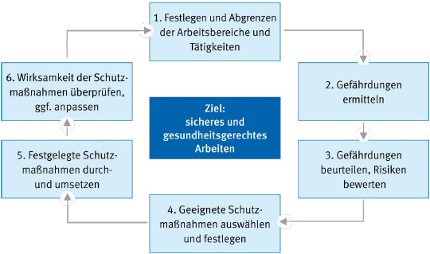

Es gehört zu den Pflichten der Bauherrschaft über die bauseits bereits vorhandenen planerischen, technischen, baurechtlichen und organisatorisch vorgesehenen Vorgaben und vorgesehenen Maßnahmen zu informieren, damit die ausführenden Unternehmerinnen und Unternehmer die ihnen obliegenden Sicherheits- und Gesundheitsschutzpflichten erfüllen können.
Voraussetzungen können z. B. sein:
Die Unternehmerin und der Unternehmer hat in Abhängigkeit von den ausgewählten Arbeitsverfahren die von der Bauherrschaft planerisch und organisatorisch vorgesehenen Vorgaben und Maßnahmen zu berücksichtigen.
Vorgesehene Maßnahmen und Vorgaben ergeben sich z. B. durch:
Die Unternehmerin bzw. der Unternehmer hat vor und während der Ausführung der Errichtung und Gebrauch von Schutznetzen (Sicherheitsnetzen) Hinweise des Koordinators bzw. der Koordniatorin nach der Baustellenverordnung (BaustellV) und aus dem Sicherheits- und Gesundheitsschutzplan zu berücksichtigen.
2.1.1 Hat die Unternehmerin oder der Unternehmer Bedenken gegen die vorgesehene Art der Ausführung, insbesondere hinsichtlich der Sicherung gegen Unfallgefahren, so hat sie oder er diese dem Auftraggeber unverzüglich, möglichst schon vor Beginn der Arbeiten, schriftlich mitzuteilen.
2.1.2 Werden Beschäftigte mehrerer Unternehmer bzw. Unternehmerinnen oder mehrere selbstständige Einzelunternehmer bzw. Einzelunternehmerinnen an einem Arbeitsplatz tätig, haben die Unternehmer bzw. Unternehmerinnen hinsichtlich der Sicherheit und des Gesundheitsschutzes der Beschäftigten, insbesondere hinsichtlich der Maßnahmen nach § 2 Absatz 1, entsprechend § 8 Absatz 1 Arbeitsschutzgesetz zusammenzuarbeiten. Insbesondere haben sie, soweit es zur Vermeidung einer möglichen gegenseitigen Gefährdung erforderlich ist, eine Person zu bestimmen, die die Arbeiten aufeinander abstimmt. Zur Abwehr besonderer Gefahren ist diese mit entsprechender Weisungsbefugnis auszustatten.
Gegebenenfalls ist ein Koordinator oder eine Koordinatorin nach BaustellV (Sicherheits- und Gesundheitsschutzkoordinator/-koordinatorin) von der Bauherrschaft zu beauftragen
2.1.3 Die Unternehmerin und der Unternehmer hat dafür zu sorgen, dass zur Ersten Hilfe und zur Rettung aus Gefahr die erforderlichen Einrichtungen und Sachmittel sowie das erforderliche Personal zur Verfügung stehen. Es muss ein Rettungskonzept vorliegen.
Bei einer Gefährdungsbeurteilung ermittelt und bewertet die Unternehmerin bzw. der Unternehmer die Gefährdungen für ihre bzw. seine Beschäftigten, die sich im Rahmen ihrer Tätigkeit aufgrund des eingesetzten Arbeitsmittels, des gewählten Arbeitsverfahrens und der Arbeitsumgebung ergeben können. Sie hat das Ziel, Maßnahmen festzulegen, um eine Gefährdung für Leben und Gesundheit der Beschäftigten zu vermeiden und eventuell verbleibende Gefährdungen so gering wie möglich zu halten.
Das Ergebnis der Gefährdungsbeurteilung ist zu dokumentieren, Schutzmaßnahmen sind festzulegen, deren Umsetzung zu organisieren und ihre Wirksamkeit zu kontrollieren.
Bei der Erstellung der Gefährdungsbeurteilung sind folgende allgemeine Grundsätze zu berücksichtigen:
Siehe § 5 des Arbeitsschutzgesetzes (ArbSchG) und Technische Regeln für Betriebssicherheit (TRBS 1111).
www.bgbau.de
Suchwort: Gefährdungsbeurteilung
Eine Gefährdung kann sich insbesondere ergeben durch

Abb. 1 Gefährdungsbeurteilung – Vorgehensweise (Handlungsschritte)
2.3.1 Die Errichtung von Schutznetzen (Sicherheitsnetzen) muss von weisungsbefugten und fachkundigen Vorgesetzten geleitet werden. Diese haben für die vorschriftsmäßige Durchführung der Arbeiten zu sorgen.
2.3.2 Die Errichtung von Schutznetzen (Sicherheitsnetzen) muss von einer weisungsbefugten und fachkundigen Person beaufsichtigt werden.
Die Unternehmerin bzw. der Unternehmer wählt in Abhängigkeit von Art und Umfang der Errichtung von Schutznetzen (Sicherheitsnetzen)
Fachkundige Personen als Aufsichtführende sind z. B. Personen, die an dem Seminar "Qualifizierung von Personen für die Montage von Schutz- und Arbeitsplattformnetzen sowie Randsicherungen" nach dem DGUV Grundsatz 301-004 erfolgreich teilgenommen haben oder vergleichbare Fachkenntnisse vorweisen.
Vergleichbare Fachkenntnisse sind z. B. dann gegeben, wenn
vorliegen.
2.3.3 Die Unternehmerin bzw. der Unternehmer informiert und unterweist ihre bzw. seine Beschäftigten über die Gefährdungen bei der Errichtung von Schutznetzen (Sicherheitsnetzen). Das gilt gleichermaßen für den Einsatz von Leiharbeiterinnen und Leiharbeitern nach dem Arbeitnehmerüberlassungsgesetz.
Die Unterweisung umfasst Anweisungen und Erläuterungen, die eigens auf den Arbeitsplatz oder den Aufgabenbereich der Beschäftigten ausgerichtet sind.
Dazu gehören z. B.:
Mängel an Arbeitsmitteln, Einrichtungen, Arbeitsverfahren oder Arbeitsabläufen, durch die für den Beschäftigten Gefahren entstehen können, müssen von den Beschäftigten der Aufsichtführenden oder dem Aufsichtsführenden unverzüglich gemeldet werden.
Mangelhafte Arbeitsmittel oder Einrichtungen sind nicht weiter zu verwenden, mangelhafte Arbeitsverfahren oder Arbeitsabläufe sind bis zur Beseitigung des Mangels zu unterbrechen.
Die und der Aufsichtführende informiert unverzüglich die Unternehmerin und den Unternehmer oder die Vorgesetzte und den Vorgesetzten nach Abschnitt 2.3.1 und handelt weiter nach deren Anweisung.
2.5.1 Vor Beginn der Arbeiten hat die Unternehmerin bzw. der Unternehmer zu ermitteln, ob die Voraussetzungen nach Abschnitt 2.1 durch die Bauherrschaft erfüllt sind und die Unternehmerin bzw. der Unternehmer hat dafür zu sorgen, dass ermittelt wird, ob im vorgesehenen Arbeitsbereich Anlagen vorhanden sind, durch die Personen gefährdet werden können.
Mögliche Gefährdungen sind z. B.:
2.5.2 Sind Anlagen nach Absatz 2.5.1 vorhanden, so hat der Unternehmer bzw. die Unternehmerin dafür zu sorgen, dass im Benehmen mit dem Eigentümer bzw. der Eigentümerin oder dem Betreiber der Anlage die erforderlichen Sicherungsmaßnahmen festgelegt und durchgeführt werden.
2.5.3 Bei unvermutetem Antreffen von Anlagen nach Abschnitt 2.5.1 sind die Arbeiten sofort zu unterbrechen. Der bzw. die Aufsichtführende nach Abschnitt 2.3.2 ist von den Beschäftigten unverzüglich zu verständigen.
Für Auf-, Um- und Abbau und Gebrauch (Benutzung) des Schutznetzes (Sicherheitsnetzes) ist ein Plan zu erstellen, hierzu kann die Aufbau- und Verwendungsanleitung des Herstellers verwendet werden. Falls erforderlich, sollte sie um besondere Hinweise zum Gebrauch ergänzt werden.
Der Plan für den Auf-, Um- und Abbau (Montageanweisung) muss auch Angaben über die einzusetzenden Arbeitsmittel für die Montage bzw. Demontage und die Maßnahmen enthalten, um die ermittelten Gefährdungen für die Beschäftigten so gering wie möglich zu halten (ein Muster für eine Montageanweisung zeigt Anhang 4).
Dem bzw. der Aufsichtführenden und den betreffenden Beschäftigten muss der Plan für den Auf-, Um- und Abbau vor Durchführung der Arbeiten vorliegen.
2.6.1 Sind bei der Errichtung von Schutznetzen besondere sicherheitstechnische Angaben erforderlich, hat die Unternehmerin und der Unternehmer eine schriftliche Montageanweisung zu erstellen, die alle erforderlichen sicherheitstechnischen Angaben, einschließlich der vom Planer und vom Koordinator bzw. von der Planerin und der Koordinatorin nach Baustellenverordnung getroffenen Festlegungen, enthält.
Die Montageanweisung muss an der Einsatzstelle vorliegen.
Erforderlicher Bestandteil der Montageanweisung sind Angaben z. B. über
Angaben der Montageanweisung können auch in Verlege- und Ausführungsplänen enthalten sein.
Bereiche, in denen Personen durch herabfallende, umstürzende, abgleitende oder abrollende Gegenstände gefährdet werden können, dürfen nicht betreten werden. Die Unternehmerin bzw. der Unternehmer oder die bzw. der Vorgesetzte nach Abschnitt 2.3.1 muss diese Bereiche festlegen. Sie sind zu kennzeichnen und abzusperren oder durch Warnposten zu sichern.
Schutz gegen herabfallende, umstürzende, abgleitende oder abrollende Gegenstände und Massen ist gegeben, wenn über den darunter liegenden Arbeitsplätzen und Verkehrswegen Abdeckungen, Gerüstbeläge, Fangwände, Fanggitter, Fangnetze mit einer Maschenweite von höchstens 2 cm, Auffangnetze mit Planen oder Schutzdächer vorhanden sind.
Absperrungen können z. B. durch Geländer, Ketten und Seile erstellt werden, Trassierbänder sind dazu nicht geeignet.
Jede Unternehmerin und jeder Unternehmer, die oder der Beschäftigte durch Schutznetze (Sicherheitsnetze) gegen tieferen Absturz sichert, trägt Verantwortung dafür, dass sich diese in einem ordnungsgemäßen Zustand befinden. Die Nutzerinnen und Nutzer sollen vor dem Gebrauch (Benutzung) eine Inaugenscheinnahme und eine Funktionskontrolle durch eine qualifizierte Person auf offensichtliche Mängel durchführen. Diese Überprüfung erfolgt anhand des Plans für den Gebrauch (Gebrauchsanleitung der Schutznetzerstellerin bzw. Schutznetzerstellers).